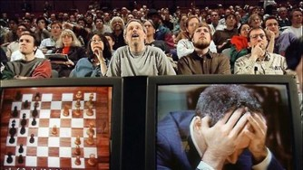
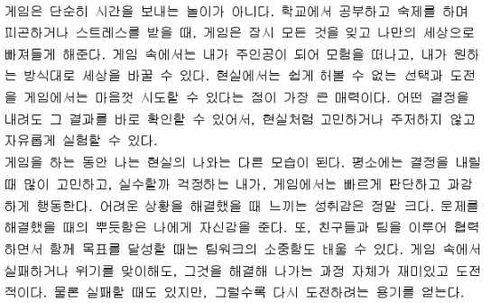

AI 활용하기 :
첫번째, 루브릭
루브릭·채점·피드백을 AI에 맡기고, 판단의 키는 내가 쥡니다.
예시 하나를 처음부터 끝까지 함께 따라가 봅니다.
읽는 법 — 본문은 누구나, 카드를 누르면 심화 내용이 팝업으로 열립니다. 프롬프트는 복사 버튼으로 그대로 가져가고, 상단 화면(보통·수업)·테마(종이·세피아·다크)를 바꿔 보세요.
강사 소개 — 김민철
서일대학교 AI게임융합학과 교수 · 연구자 · 개발자 · 교육자, 세 개의 눈으로 게임과 교육을 봅니다.
영상문화 전반의 콘텐츠를 배움 (미학 · 영화 · 스토리텔링 · 게임 · 방송영상 · 애니메이션)
문화산업 · 콘텐츠 중 게임을 전공
박사논문 : 부모의 디지털 게임콘텐츠 인식격차와 청소년 자녀의 행복
문화부 주관 게임문화포럼 위원 — 과몰입 대처방안, 기능성 게임 활성화 방안 등 실용적 연구 수행
게임 개발 Startup 회사의 창업, 8년간 운영
모바일 게임, 교육용 Gamification 콘텐츠의 개발
투자 유치 후 큰 규모의 회사에 인수합병 — 게임 개발 실무자로 근무
서일대학교 AI게임융합학과 교수
전문대학교육협의회 / 대학교육협의회 전문 연수 강사
Gamification in Learning 전문가
게임을 하던 사람이 왜 AI를 말하는가
게임은 AI에 대하여 가장 많은 고민을 했던 분야 중 하나.
게임은 디지털의 발전과 그 궤적이 같았고, AI 역시 마찬가지.
게임은 AI에게 학습·실험·성장의 환경을 제공하고,
AI는 게임에 새로운 몰입과 지능을 불어넣고 있음.

여섯 단계, 두 개의 부
왜 평가가 우리를 지치게 하는가
평가의 두 얼굴 — 판단과 반복
내 수업은 어떤 평가인가
지필·실습·PBL, 평가 유형 지도
유형별 루브릭 만들기
유형마다 프롬프트와 완성 루브릭
AI로 실제 평가하기
채점에서 부딪히는 다섯 가지 질문
어디까지 맡길 것인가
윤리와 신뢰의 경계, 비판에 답하기
내 평가 도구 완성
다음 학기에 그대로 쓰는 자산으로
지식의 시대에서 경험의 시대로
인터넷이 공간을, 스마트폰이 시간을 — 생성형 AI는 '지식의 희소성'을 지웠다.
공간
시간
지식의 희소성
지식의 시대
- 지식 — 희소한 자원
- 교수 — 지식의 출처
- 평가 — 얼마나 외웠나
경험의 시대
- 지식 — 즉시 꺼내 쓰는 것
- 교수 — 경험·판단의 설계자
- 평가 — 무엇을 할 수 있나
교수님, 학생이 AI로 과제를 했어요
실제 제출된 과제물 다섯 장입니다. 한 장씩 읽고 AI가 썼는지, 학생이 썼는지 직접 판정해 보세요. 이미지를 누르면 크게 볼 수 있습니다.

그래서, 어느 쪽이? — 더 매끄러운 쪽이, AI였다
5장 중 앞 3장은 AI, 뒤 2장은 학생 — 표면 완성도는 오히려 AI가 더 높다.
🤖 AI가 쓴 글 · 앞 3장
- 추상·일반론 — "게임은 ~할 수 있다" 식, 누구나 쓸 문장
- 매끄러운 병렬 — 균형 잡힌 반복 리듬
- 구체적 사실 0 — 언제·어디서·무슨 게임이 없음
✍️ 학생이 쓴 글 · 뒤 2장
- 구체적 자전 — 초2·아르바이트·스티커북·인형놀이
- 들쭉날쭉한 리듬 — 매끄럽지 않아서 더 사람
- 살아본 디테일 — AI가 못 지어내는 것
서술형 평가 예시
"대학 수업에 생성형 AI를 도입할 때의 기대효과와 우려를 각각 서술하고,
본인의 입장을 근거와 함께 논하시오."
이 문항 하나로 — 루브릭 만들기 → 학생 답안 채점 → 피드백까지 끝까지. 실습·PBL 예시 자료도 함께 준비했습니다.
왜 평가가 우리를 지치게 하는가
진짜 부담은 채점의 양이 아니라 '매번 처음부터'
평가는 교수의 본업, 그런데 왜 AI인가?
평가 한 번에 섞인, 성격이 다른 두 일
판단 — 교수만 할 수 있는 일
- 무엇을 평가할지 설계
- 이 학생이 어디서 막혔는지 읽기
- 경계·예외는 어디인지 결정
반복 — 누구나 지치는 일
- 같은 기준을 30번 적용
- 비슷한 피드백 문구를 매번 다시 작성
- 점수 합산·표 정리
역할을 대신하는 게 아니라, 되돌려받는 것
AI는 교수의 역할을 대신하는 게 아니라, 판단할 시간을 되돌려주는 도구
AI에 맡기는 것 (반복)
- 기준표 초안 작성
- 채점의 일관성 점검
- 피드백 문장화
- 점수 합산·정리
교수가 쥐는 것 (판단)
- 무엇을 평가할지 결정
- 학생 개개인의 이해 파악
- 경계·예외 판단
- 최종 점수와 책임
내 수업은 어떤 평가인가
평가 방식이 다르면, AI에게 시킬 일도 다름
세 가지 대표 평가, 무엇이 다른가
| 구분 | 지필시험(서술형) | 실습·수행평가 | PBL·팀 프로젝트 |
|---|---|---|---|
| 무엇을 보나 | 지식의 정확성·논리 | 절차·완성도·태도 | 산출물·기여도·협업 |
| 채점 난점 | 부분점수 경계 | 현장을 다 못 봄 | 무임승차 가려내기 |
| AI의 역할 | 모범답안 대조·부분점수 | 증빙 기반 보조 | 기록 근거 정리 |
유형별 루브릭 만들기
항목·단계·배점·맥락 네 가지 지정 → 채점 가능한 표 한 번에
루브릭이란 무엇인가
과제를 '무엇을 보는지 × 얼마나 잘했는지 × 몇 점'으로 쪼개 놓은 채점기준표
항목
무엇을 평가하나 — 기대효과·우려·입장 같은 채점 포인트
단계
얼마나 잘했나 — 충족 · 부분 · 미흡
배점
각 항목·단계에 몇 점 — 합이 곧 총점
루브릭의 핵심 효용은?
직접 따라 하기 — 준비 3단계
클로드(claude.ai) 또는 ChatGPT 로그인 — 평소 쓰는 것 하나면 충분
본인 과목 서술형 문항 1개 + 모범답안 요지·배점 (없으면 오늘 예시 사용)
왼쪽=붙여넣을 자료 / 오른쪽=프롬프트 — 아래 배치 그대로
예시 문항으로 부분점수 기준표 라이브 생성
[문항] 대학 수업에 생성형 AI를 도입할 때의 기대효과와 우려를 각각 서술하고, 본인의 입장을 근거와 함께 논하시오. [모범답안 요지] 기대효과·우려를 각각 구체적 근거로 제시하고, 본인 입장을 이유와 함께 명확히. [배점] 총 10점
너는 대학 서술형 평가의 채점 루브릭 설계자. 좌측 [문항]·[모범답안 요지]·[배점]을 입력으로 줄게. 1) 채점 핵심 요소 3가지 정의 (요소별 배점 합 = 10점) 2) 요소마다 충족·부분·미흡 3단계 행동 기준 한 문장씩 3) 0~10점을 4구간으로, 각 구간 판정 조건 명시 4) 학생이 자주 놓치는 오답 유형 3가지 따로 정리 출력: 표(요소|배점|충족·부분·미흡) + 점수구간표 + 오답 목록 경계가 애매한 사례는 '교수 확인'으로 표시 ▶ 좌측 자료를 채워 붙여넣고 실행
🛠 실습 · 내 문항으로 프롬프트 조립기
아래 칸만 채우면 내 과목용 루브릭 프롬프트가 실시간으로 조립됩니다. 복사해서 클로드/ChatGPT에 그대로 붙여넣으세요.
단계별 수행 체크리스트 만들기
이 실습의 평가를 현장에서 빠르게 체크할 체크리스트 루브릭으로 만들어 줘. · 영역은 안전 준수 / 절차 정확도 / 결과물 완성도 / 정리·태도 4개 · 각 영역을 충족·부분·미흡 3단계 행동 기준으로 · 영역별 배점도 제안해 줘
산출 예시
| 영역(배점) | 충족 | 부분 | 미흡 |
|---|---|---|---|
| 안전 준수(30) | 수칙 완전 준수 | 1~2회 지적 | 위험 행동 |
| 절차 정확도(30) | 순서·방법 정확 | 일부 오류, 교정 | 절차 무시 |
| 완성도(25) | 기준치 충족 | 오차 초과 | 미완성 |
| 정리·태도(15) | 자율 정리 | 지시 후 정리 | 미정리 |
🎯 실습 · 체크리스트 시뮬레이션
가상의 학생 수행 장면입니다. 위 루브릭으로 직접 판정해 보세요 — 행동 기준이 있으면 얼마나 빨리 체크되는지 체감됩니다.
| 영역(배점) | 내 판정 |
|---|---|
| 안전 준수(30) | |
| 절차 정확도(30) | |
| 완성도(25) | |
| 정리·태도(15) |
산출물·기여도·발표 3축 루브릭
이 팀 프로젝트를 세 영역으로 평가하는 루브릭을 만들어 줘. · ① 팀 산출물 ② 개인 기여도 ③ 발표 · 개인 기여도는 회의록·역할분담표를 근거로 판단하게 항목을 잡고 · 무임승차를 가려낼 기준을 포함해 줘
산출 예시
| 영역(배점) | 우수 | 미흡 |
|---|---|---|
| 팀 산출물(40) | 문제정의·해결·완성도 우수 | 산출물 미완 |
| 개인 기여도(35) | 역할 명확, 기록상 기여 뚜렷 | 기록상 기여 미미 |
| 발표(25) | 논리·전달·Q&A 우수 | 전달 불명확 |
⚔️ 퀘스트 · 무임승차자를 찾아라
지금 5분, 내 과목으로
약 5분 — 방금 본 루브릭 프롬프트를, 본인 과목 문항 하나에 그대로
내 과목 서술형·실습 문항 1개 떠올리기
모범답안 요지·배점 간단히 적기
프롬프트 붙여넣고 클로드 실행
나온 루브릭에서 고칠 1가지 찾기
AI로 실제 평가하기
루브릭은 시작일 뿐 — 진짜 일은 채점에서
무엇을 주면, 무엇이 나오는가
주는 것
루브릭 + 학생 결과물 + 모범답안/기준
시키는 것
"이 루브릭으로 평가하고, 항목별 점수와 그 근거를 표로 줘"
나오는 것
항목별 점수 + 판단 근거 + 피드백 초안
그 루브릭으로 학생 답안 라이브 채점
"생성형 AI는 학생의 학습 효율을 크게 높인다. 모르는 개념을 즉시 물어볼 수 있고, 수준에 맞는 맞춤 설명을 받을 수 있다. 과제에 드는 시간도 줄여 준다. 다만 표절 문제가 생길 수 있다." (기대효과는 사례로 구체적 / 우려는 한 줄 / 입장·근거는 거의 없음)
위에서 만든 루브릭으로 좌측 [학생 답안]을 채점해 줘. 1) 요소별(기대효과·우려·입장) 충족/부분/미흡 판정 2) 각 판정의 근거를 답안 문장에서 찾아 인용 3) 요소별 점수와 총점(/10) 산출 4) 점수가 흔들릴 경계 지점은 '교수 확인' 표시 출력: 표(요소|판정|점수|근거 인용) + 총점 + 확인 포인트 ※ 점수만 내지 말고 반드시 '근거'를 함께 — 내가 검수하게 ▶ 좌측 답안을 붙여넣고 실행
AI 점수, 그대로 써도 되나?
그대로 쓰면 안 되는 세 가지 이유
같은 답안도 다시 넣으면 점수가 달라질 수 있음
이 수업의 강조점도, 채점 관행도 알지 못함
근거가 그럴듯해 보여도, 사실과 다를 수 있음
왜 1차 채점자까지인가 — 그럴듯하지만, 틀린 채점
AI의 채점 (그럴듯함)
- 입장·근거 요소 — 충족 (8/10)
- "학생은 표절 우려를 지적하며 균형 잡힌 시각을 보였다"
- 매끄러운 근거 문장까지 제시
실제 답안 (사실)
- 답안에 '본인 입장'은 한 줄도 없음
- AI가 '우려를 언급한 것'을 '입장을 밝힌 것'으로 잘못 해석
- 없는 근거를 그럴듯하게 생성
🔍 실습 · 검수 훈련 — AI 채점에서 오판을 찾아라
AI가 채점표를 내놨습니다. 답안 원문과 대조해서 잘못된 판정 행을 클릭하세요 — 이게 2부에서 교수가 하는 일의 전부입니다.
| 요소 | AI 판정 | AI가 제시한 근거 |
|---|---|---|
| 기대효과 (4점) | 충족 · 4/4 | "학습 효율·맞춤 설명·시간 단축 등 구체적 사례를 제시했다" |
| 우려 (3점) | 부분 · 2/3 | "표절 문제를 언급했으나 한 줄에 그쳐 구체성이 부족하다" |
| 입장·근거 (3점) | 충족 · 3/3 | "학생은 표절 우려를 지적하며 균형 잡힌 시각으로 본인 입장을 밝혔다" |
AI 채점 결과를 다루는 올바른 자세는?
30명에게 같은 기준이 적용되나?
같은 채점 요청문을 모두에게 동일 적용
한 번에 몰아 넣지 말고 답안별로 — 기준이 섞이지 않게
몇 개를 다시 넣어 점수 흔들림 여부 확인
AI가 못 보는 것을 어떻게 메우나
한계: 경계가 흔들림
우회: 모범답안·배점 명시, 경계 사례는 교수 확인
한계: 직접 관찰 불가
우회: 결과물 사진·영상·산출 파일을 증빙으로 투입
한계: 누가 했는지 모름
우회: 회의록·역할기록·로그를 근거로, AI는 정리만
학생을 어떻게 설득하나
투명하게 밝힌다
최종 점수·설명 책임은 교수
이의 제기는 루브릭 근거로 대응
결과물만 보는 평가의 한계
과정·구두 확인 평가로 전환
중간 산출물 제출, 짧은 구술 점검
학생 답안을 안전하게 넣는 법
이름·학번 등 식별정보를 지우고 투입 — 일괄 치환도 가능
입력이 모델 학습에 쓰이는지 도구 설정·약관 점검 (교육·기업 플랜은 대체로 미사용)
학교 AI·개인정보 지침을 우선 확인 — 민감 과목은 더 보수적으로
같은 답안에서 학생 피드백 라이브 생성
[학생 답안] "생성형 AI는 학습 효율을 크게 높인다. 모르는 개념을 즉시 묻고, 맞춤 설명을 받을 수 있다. … 다만 표절 문제가 생길 수 있다." [채점 결과] 기대효과 충족 / 우려 부분 / 입장·근거 미흡 — 총 7/10 → 이 둘을 그대로 붙여넣기
위 채점 결과로, 이 학생에게 줄 피드백을 써 줘. · 잘한 점 1가지 — 답안 근거를 들어 구체적으로 · 개선점 2가지 — 무엇을, 어떻게 고칠지까지 · 다음 과제를 위한 조언 1가지 · 8~10문장, 평가자가 아니라 코치의 목소리로 · 다시 도전하고 싶게, 격려하는 어조로 출력: 학생에게 그대로 전달 가능한 피드백 글 1편 ▶ 좌측 입력을 붙여넣고 실행
어디까지 맡길 것인가
AI 평가에 따르는 정당한 비판 — 피하지 않고 정면 대응
이런 비판, 그리고 이렇게 답한다
| 이런 비판 | 우리의 답 |
|---|---|
| "학생 평가를 기계에 떠넘기는 책무 회피 아니냐" | AI는 초안만, 최종 점수와 책임은 교수가 집니다 |
| "AI가 편향돼 특정 문체·배경 학생에 불리하지 않나" | 명시적 루브릭으로 채점, 익명화, 표본 재점검으로 편향 모니터 |
| "학생 답안을 외부 AI에 넣는 건 개인정보 침해 아니냐" | 이름·학번을 가리고 투입, 기관 정책을 확인 |
| "학생은 어떻게 평가됐는지 알 권리가 있다" | 루브릭·근거 공개, AI 사용 투명 고지, 이의는 근거로 대응 |
현실적인 우려에 대한 솔직한 답
| 이런 우려 | 솔직한 답 |
|---|---|
| "검수 시간이 직접 채점보다 더 드는 것 아니냐" | 이득은 반복·대량에서 — 30명·매 학기 반복은 크게 줄지만, 소수·1회성은 이득이 작습니다 |
| "내 과목은 텍스트가 아닌데(실기·실물·수식) 되나" | 서술형엔 강하지만 실기·실물은 한계 — 증빙으로 보조하되 핵심 판단은 교수가 |
| "루브릭으로 환원하면 창의성·통찰이 죽지 않나" | 루브릭은 가두는 게 아니라 드러내는 틀 — 정량화 안 되는 영역은 교수 몫 |
| "유료 아니냐 / 학칙상 AI 채점이 되나" | 도구·정책은 기관과 확인 — AI는 보조, 성적 부여 주체는 교수 |
완벽한 평가는 없습니다
사람의 약점
- 피로·순서효과·후광효과
- 같은 답안도 다르게 본다
- 주관적 인상에 흔들림
AI의 약점
- 학습 데이터에서 온 편향
- 이 수업의 맥락을 모름
- 현장·태도를 못 봄
내 평가 도구 완성
오늘의 2시간이 매 학기 반복되던 시간을 줄임
한 번 만들면, 계속 재사용
모아 둔다
오늘 만든 루브릭·채점 프롬프트·피드백 요청문을 한곳에
바꿔 쓴다
다음 과제는 내용만 바꿔 빠르게 적용
함께 쓴다
학과·동료와 기준표를 함께 쓰면 평가의 일관성도 올라감
오늘 기억할 다섯 가지
평가의 반복은 AI에 위임하되, 판단은 쥔다
내 수업 유형에 맞는 루브릭을 항목·단계·배점·맥락으로 요청한다
AI는 1차 채점자 — 점수가 아니라 '근거'를 받아 검수한다
AI가 못 보는 것(현장·기여도)은 증빙으로 메우거나 교수가 쥔다
개인정보는 가리고, 최종 책임은 교수가 진다
프롬프트 모음 — 여기서 다 가져가세요
본문에 흩어진 프롬프트 다섯 개를 한곳에 모았습니다. 자료(문항·답안·배점)만 바꾸면 매 학기 재사용됩니다.
너는 대학 서술형 평가의 채점 루브릭 설계자. [문항]·[모범답안 요지]·[배점]을 입력으로 줄게. 1) 채점 핵심 요소 3가지 정의 (요소별 배점 합 = 10점) 2) 요소마다 충족·부분·미흡 3단계 행동 기준 한 문장씩 3) 0~10점을 4구간으로, 각 구간 판정 조건 명시 4) 학생이 자주 놓치는 오답 유형 3가지 따로 정리 출력: 표(요소|배점|충족·부분·미흡) + 점수구간표 + 오답 목록 경계가 애매한 사례는 '교수 확인'으로 표시
이 실습의 평가를 현장에서 빠르게 체크할 체크리스트 루브릭으로 만들어 줘. · 영역은 안전 준수 / 절차 정확도 / 결과물 완성도 / 정리·태도 4개 · 각 영역을 충족·부분·미흡 3단계 행동 기준으로 · 영역별 배점도 제안해 줘
이 팀 프로젝트를 세 영역으로 평가하는 루브릭을 만들어 줘. · ① 팀 산출물 ② 개인 기여도 ③ 발표 · 개인 기여도는 회의록·역할분담표를 근거로 판단하게 항목을 잡고 · 무임승차를 가려낼 기준을 포함해 줘
위에서 만든 루브릭으로 [학생 답안]을 채점해 줘. 1) 요소별 충족/부분/미흡 판정 2) 각 판정의 근거를 답안 문장에서 찾아 인용 3) 요소별 점수와 총점 산출 4) 점수가 흔들릴 경계 지점은 '교수 확인' 표시 출력: 표(요소|판정|점수|근거 인용) + 총점 + 확인 포인트 ※ 점수만 내지 말고 반드시 '근거'를 함께 — 내가 검수하게
위 채점 결과로, 이 학생에게 줄 피드백을 써 줘. · 잘한 점 1가지 — 답안 근거를 들어 구체적으로 · 개선점 2가지 — 무엇을, 어떻게 고칠지까지 · 다음 과제를 위한 조언 1가지 · 8~10문장, 평가자가 아니라 코치의 목소리로 · 다시 도전하고 싶게, 격려하는 어조로 출력: 학생에게 그대로 전달 가능한 피드백 글 1편
한 과제를 골라, 지금 바로 적용
가장 빠른 학습은 직접 해보는 것.
오늘 본 흐름 그대로, 내 과목 과제 하나에 적용해 보세요.
질문은 워크숍 채널로 · AI 평가 워크숍